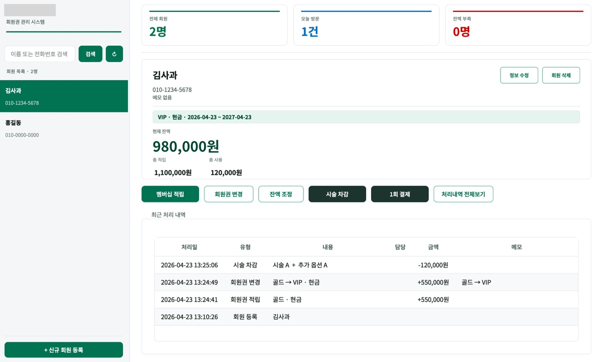
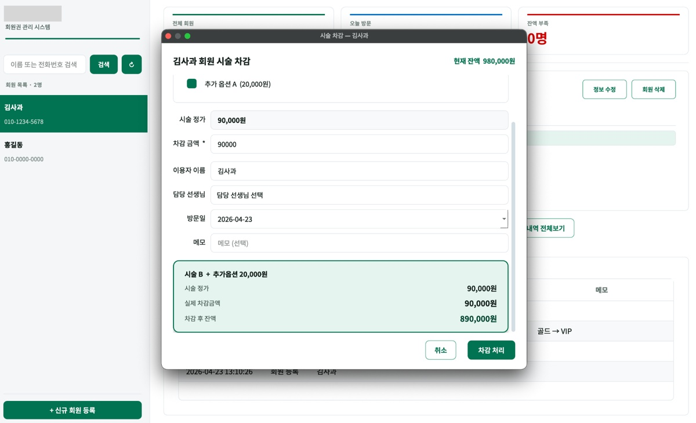
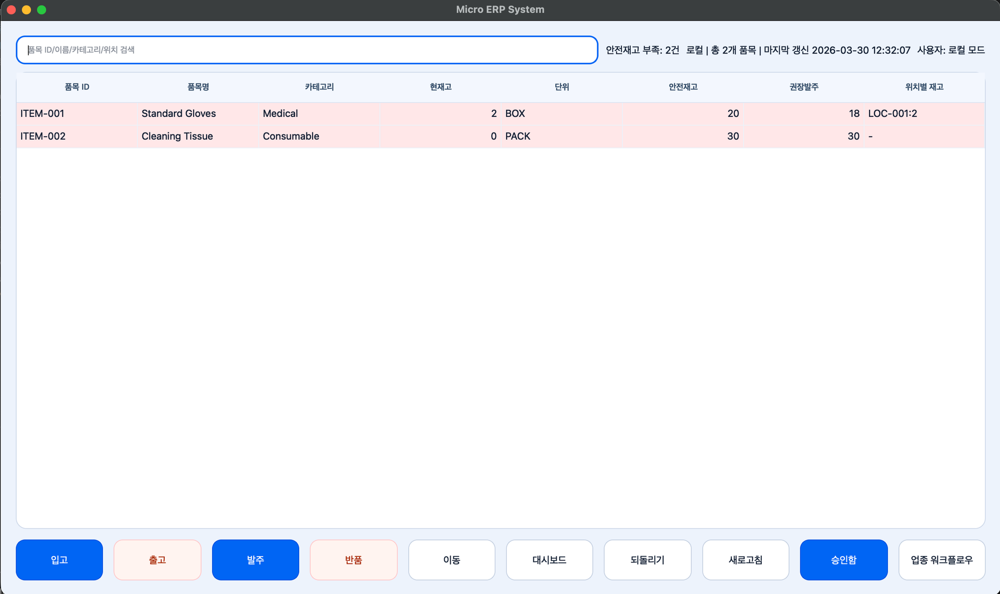
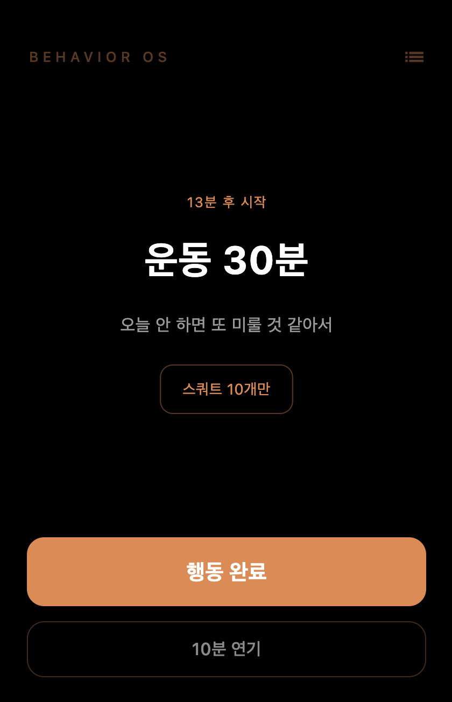
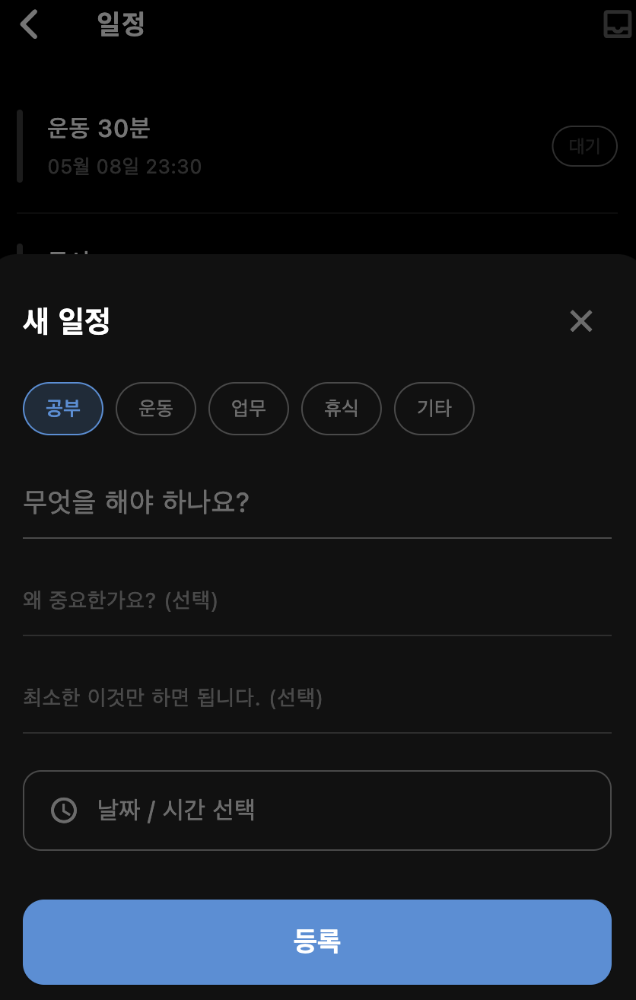
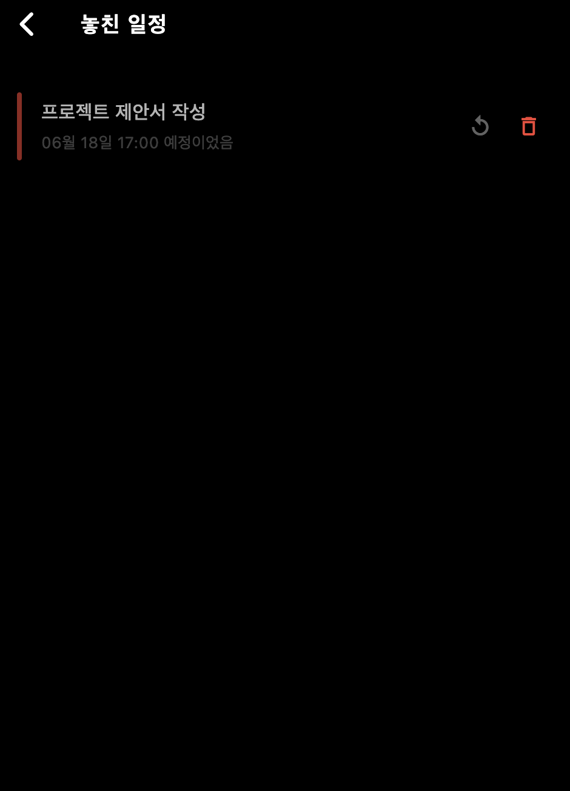

PROJECT 01
SHIPPED코인 세탁소 포인트 관리 프로그램
실제 운영 중인 코인 세탁소에 납품하고, 운영자 피드백을 반영해 지속적으로 개선 배포를 진행했습니다.
- 실 운영 환경에 납품 및 설치 완료
- 납품 후 운영자 피드백 기반 지속 개선 배포
- 이슈 발생 시 직접 대응 및 유지보수
Python · 프리랜서 납품


ALL PROJECTS
PROJECT 01
SHIPPED실제 운영 중인 코인 세탁소에 납품하고, 운영자 피드백을 반영해 지속적으로 개선 배포를 진행했습니다.
Python · 프리랜서 납품
PROJECT 02
SHIPPED피부·바디 케어샵에서 실제 사용 중인 회원권 관리 데스크톱 앱입니다. 회원 등록부터 멤버십 적립, 시술 차감, 담당 선생님 관리까지 매장 운영에 필요한 전체 흐름을 하나의 프로그램으로 납품했습니다.
Python · PySide6 · SQLite · 프리랜서 납품


PROJECT 03
SHIPPED단일 API 실패로 정보가 누락되지 않도록 다중 수집 + fallback 경로를 적용해, 환경 편차에 대한 안정성을 높였습니다.
Python · Failure Handling · Fallback Architecture · Code Signing

실행 화면은 저작권 범위 협의 중으로 비공개 상태입니다.
PROJECT 04
PROTOTYPE소규모 사업장을 위한 재고 관리 ERP 프로토타입입니다. Python 데스크톱 앱과 Java 백엔드를 분리한 하이브리드 아키텍처로 설계했습니다.
Python · PySide6 · Java · Spring Boot · MySQL

PROJECT 05
IN PROGRESS바이오·화학 연구실에서 며칠씩 무인으로 돌아가는 장비가 심야에 오류가 나면, 연구원이 아무도 모릅니다. 수일치 데이터와 수백만 원의 샘플이 폐기되는 이 문제를 해결합니다. 기존 산업용 솔루션(NI LabVIEW 등)은 구축 비용이 수백~수천만 원에 달해 예산이 부족한 대학 연구실은 여전히 연구원이 밤을 새우며 장비를 지킵니다. LabGuard는 이 공백을 채웁니다.
React · FastAPI · TimescaleDB · Python · pyserial · Telegram Bot API · Docker
개발 진행 중
PROJECT 06
IN PROGRESS스케줄 관리가 어려운 사람을 위해 만든 앱입니다. 목록 대신 지금 해야 할 것 하나만 화면에 띄웁니다. 일정을 등록할 때 "왜 중요한지"와 "최소한 이것만 하자"를 직접 쓰게 해서, 실행 순간 스스로 동기를 되살리도록 설계했습니다.
Flutter · Dart · Riverpod · Drift · iOS EventKit


